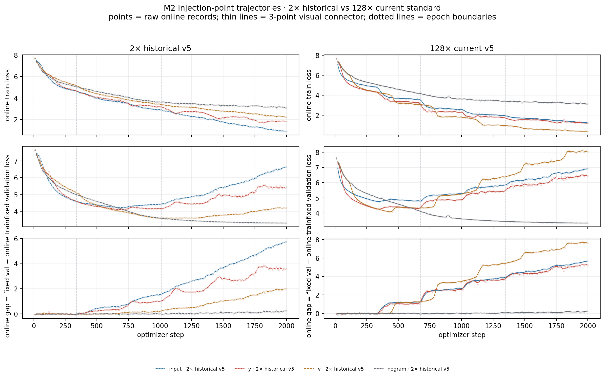
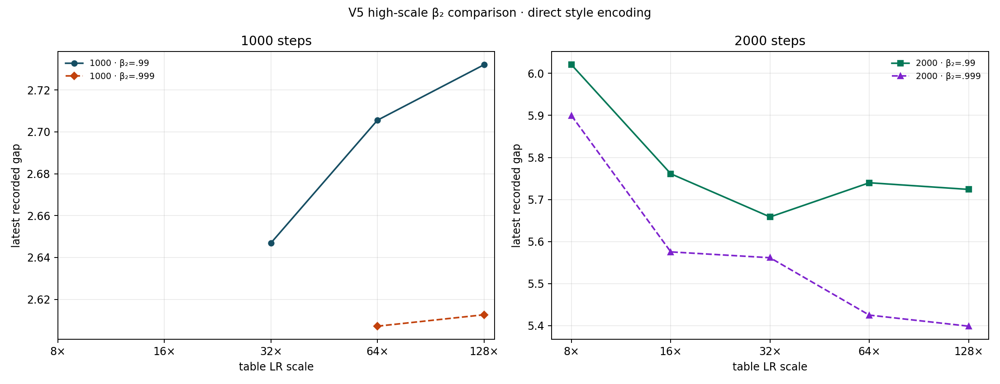

n-gram Gap：主实验与机制证据
这是一份只保留当前核心证据的主实验文档：先比较历史 2× 与当前 128× 标准，再看 exact frequency，随后给出 table-size / epoch-length / dose 三轴的定量描述，最后用 LR/β₂ 附录与 causal intervention 检查机制。旧版背景、debug 和历史架构不在本页混写。
标准与测量契约
8L · 6H · 768D
bigram + trigram
each branch
train / val 不重叠
(0.0, 0.99)
0.0768
lr 0.0006 · wd 0.1
bf16 · no compile
标准预算：seed 42；主实验 2000 steps；causal / optimizer 快速批 1000 steps；val、frequency 与 table RMS 每 10 步。1000 步约 3 个 epoch，2000 步约 6 个 epoch；完整 shard 为约 337 device batches / epoch。
gap(step) = fixed_val(step) − online_train_current_batch(step)
online train loss 在参数更新前记录；同一步 fixed validation 在更新后计算。频率统计沿用该 step 当前 batch 的 train-side loss；novel（train hit-count = 0）没有 train loss，因此不定义 gap。
唯一主线数据命名空间：data/runs_fixed/*_fixed/；S1 scaling 的登记原始数据位于其专用 data/runs_scaling/*_fixed/ 目录，并在 CSV 中保留 source、run_id、step、seed。
展开 jargon 对照
2× / 128× 是 n-gram table learning-rate scale，不是 backbone LR；v5 是当前 clean-table、current-batch online、warmup-constant 的实验波次名；M2 是注入点消融；S1 是 scaling 线；_fixed 表示权威修正后结果目录。历史 2× 不是当前推荐 setting。
1. 主要现象：2× 与 128× 的注入点对照
四臂只改变 n-gram residual 的注入位置：input 加在 wte，y 直接进入 residual stream，v 先经过 attention 的 value 混合，nogram 是负对照。这里先看 2× 历史 v5 和 128× 当前标准的完整 train/val/gap 轨迹，再看末端差异。

2×：nglab1x_{input,y,v,nogram}_v5_fixed；128×：nglab1x_{input,y,v,nogram}_v5_128x_freq10_fixed。点为原始 online 记录，细线为 3 点视觉连接；没有使用旧 4-batch train probe 代替当前 batch。

128× 后端注入的 gap 明显放大：v 由 2.014 升至 7.648，y 由 3.640 升至 5.248；input 由 5.741 变为 5.672，nogram 始终接近零。柱状图只展示 step-2000 raw endpoint。
2. 频率分 bin：context hit-count 与 gap
频率横轴是训练集里同一个 context 的 exact hit-count f，不是 context 的种类数；宽 bin 仅用于展示。左图显示该 bin 覆盖的 token fraction，右图显示每个 bin 的 raw gap。分 bin train 侧使用当前 logged step 的 online batch，val 侧使用同一步 fixed validation。


两图均来自 nglab1x_{input,y,v,nogram}_v5_128x_freq10_fixed/freq_bin_loss.jsonl。novel 在覆盖图中保留，因为它有 validation exposure；但 novel 没有 train loss，在 gap 图中不赋值。

bigram 与 trigram 在同一张图中分别拟合；正 gap、共享 context 且有有效 train/val 统计的点进入 log–log 描述。当前单 seed 的 token-mass-weighted slope 为 bigram −0.253、trigram −0.318，R² 分别为 .997 与 .996；这支持频率相关性，但不是 frequency 的独立因果证明。

同一频率段覆盖的 token mass 约为该段的 Σf。它回答“这一段暴露了多少 token”，而图 4 回答“一个频率为 f 的 context 的 gap 如何变化”，两者不能混为一个横轴。
3. 三轴 scaling：表大小、epoch 长度、剂量
下面三条轴都使用 128×、clean-table 或对应 v5 标准；拟合是描述性统计，不引入旧 4-layer/2-hash 结果，也不把单 seed 的拟合写成普适定律。
3.1 Table-size：单表、单变量、bigram/trigram 分开

| branch | 拟合窗口 | n | slope α（净 gap） | R² | raw-gap 斜率（敏感性） | 唯一变量 |
|---|---|---|---|---|---|---|
| bigram-only | R 2e3–2e5 | 12 | 0.58 | 0.997 | 0.50 | bigram physical rows R；trigram table 关闭 |
| trigram-only | R 1e5–9.3e5 | 8 | 0.66 | 0.9997 | 0.65 | trigram physical rows R；bigram table 关闭 |
两条轴在小 R（≲1e4）都进入 no-gram floor（噪声主导，塌缩区），在大 R 进入饱和：bigram 局部斜率在 R≈3e5 后衰减，trigram 在 R≈1.2e6 后饱和。上面的 α 只取中间线性窗口；换用 raw gap（不减 floor）时斜率降为 0.50 / 0.65，作为 floor 取值的敏感性参考。斜率接近 0.58≈1/2 与 0.66≈2/3，与用户预期一致，但此处仍为描述性拟合，不是机制定律。
K 是训练前缀中的 distinct contexts，R 是被扫描分支的 physical rows；K/R 只是 load ratio，不是 collision rate。当前正式 run 没有 occupied-row 观测，因此不从 K/R 推断 collision。
3.2 Epoch-length：相对完整 L4 的倍数

12 个点的 final gap 对 ln(L/L4) 做二次描述拟合，顶点约为 0.412×L4，预测 gap 2.649，R²=.774。它概括了观察到的 U 形，但不是机制定律；每个点是 seed 42 的三 epoch 对齐 run。

同一 L4（337 device batches/epoch）的 10-epoch trigram-only 长训中，epoch-boundary gap 为 −0.048、1.018、2.473、3.697、4.614、5.609、6.439、7.144、7.847、8.675（epoch 1–10；s1v5_128_ep_tri_1xL4_10ep，seed 42，step 3370）。从 epoch 2 到 10 的线性参考斜率约为 0.96 gap/epoch，但每 epoch 增量从 1.45 的早期峰值逐步降到约 0.7–0.8；因此当前证据支持“近似线性、斜率逐渐变小”的凹增长，而不是已经观测到明确平台。no-gram 对照在同一窗口只从约 0 增至 0.48。图中点是原始 boundary records，没有 21-step 平滑或插值。
3.3 Shard dose：同一 input 主线的剂量轴

final gap 从 0.25× 的 10.895 降至 8× 的 −0.055；正 gap 点（≤5×）的 log–log 描述斜率为 −1.727，R²=.887。5× 与 6× 之间发生符号变化，因此不报告跨越零点的全局 power law。
4. 附录：table LR 与 β₂ 消融
该附录用于确定工作点，不替代当前 128× 主线。干净的 11-arm sweep 使用 1000 steps、val/frequency=10、clean 双表、RMSProp 或对照 optimizer；随后用高 scale 的 1000/2000-step 轨迹检查 β₂=.99 与 .999 在 128×附近是否出现稳定的延后。


| 消融 | 条件 | final gap | run / step |
|---|---|---|---|
| LR scale | β₂=.99；scale 0.5→4 | 0.465→2.072 | optv5c_rms_b099_s{0p5,1p0,2p0_r1,3p0,4p0} @1000 |
| β₂ | RMSProp；scale=2 | 1.239 (.95) 1.460 (.98) 1.550 (.99) 1.594 (.995) 1.669 (.999) | optv5c_rms_b{095,098,099,0995,0999}_s2p0 @1000 |
| optimizer | scale=2；β₂=.99 | RMS 1.551 AdamW 1.502 SGD 0.078 | optv5c_{rms,adamw,sgd}_* @1000 |
| 高 scale | scale=128；β₂=.99 / .999 | 2.732 / 2.613 @1000 5.724 / 5.399 @2000 | optv5f_rms_b{099,0999}_s128p0* |
RMSProp (0.0,0.99) + table LR 128×，不把“更大 LR 必然更好”写入结论。5. Causal intervention：表内容、映射与低频贡献
所有 causal run 都使用 input、128×、1000 steps；边界是完整 shard 的 epoch boundary，曲线同时报告当前 batch 的 online train loss、fixed validation loss 与 gap。机制证据只采用两类干净干预：hash_reseed（只换 context→row 映射）与互补的 mask_low/high（按训练集静态频率屏蔽 residual）；freeze_table / freeze_backbone 只作为写入路径参考。两种过强的早期干预已从当前代码、登记和图表中删除。


图 13 的 14 个点全部来自新语义（f≥t，含边界）的重刷批 causalv5m2_mask_high_t{1,2,5,10,25,50,100,200,400,800,1600,3200,6400,12800}_e1_fixed（1000 步、seed 42、epoch-2 边界），每个 run 的 summary 事件记录 high_context_counts 已逐一与 freq_index.npz 的 f≥t 实测吻合。点是 step-1000 原始 gap，细线仅为 3 点视觉连接；阈值越低，屏蔽的 seen context 越多。mask 是 context 级的：novel（f=0）context 在 high 模式下永不屏蔽，因此扫描下界是 t=1（仅剩 novel 读出）。曲线形态：t≥100 进入 ~2.72–2.82 的平台（峰值在 t=200 处 2.824）；t≤25 开始明显下降（t=10 → 2.291、t=5 → 2.023、t=2 → 1.752），t=1 回升到 1.927——此时全部 seen context 均被屏蔽，train/val 同时失去 table 信号。主要结论：gap 的贡献集中在更低频的 seen context，而不是所有 high-frequency context 等价贡献。
| 类别 | 干预 | 语义 | final train | final val | final gap |
|---|---|---|---|---|---|
| control | none | 无边界干预 | 2.574 | 5.298 | 2.724 |
| 核心机制 | hash_reseed e1 | 只换 context→row 映射；保留表权重与 RMSProp state | 3.274 | 4.628 | 1.354 |
| 核心机制 | hash_reseed e1+e2 | epoch-2 与 epoch-3 边界各 reseed 一次 | 4.304 | 4.373 | 0.069 |
| 核心机制 | mask_low e1 | 边界后屏蔽 f<200（含 novel f=0）的 residual 与梯度 | 3.686 | 3.787 | 0.101 |
| 核心机制 | mask_high e1 | 边界后屏蔽 f≥200 的 residual 与梯度（causalv5m2_mask_high_t200_e1，f≥t 新语义） | 3.232 | 6.056 | 2.824 |
| 写入路径参考 | freeze_table e1 | 边界后停止表写入，仍保留表 readout | 2.111 | 5.563 | 3.452 |
| 写入路径参考 | freeze_backbone e1 | 边界后停止 backbone 更新，仍训练表 | 3.574 | 4.804 | 1.230 |
hash_reseed 只破坏 context→row 映射、保留表内容和 optimizer state，单边界后 gap 降至 1.354，说明映射对齐确实重要；但 epoch-3 又会学出新映射，把 gap 拉回来——在 epoch-2 与 epoch-3 两个边界都 reseed 时 gap 塌缩到 0.069，证实持续的对齐破坏才能压制重写。来源、代码与可追溯约束
- 训练入口：
code/train.py；频率索引与统计：code/ngram_freq.py；集群 launcher：code/cluster/。 - 注入公式：
x = wte(idx) + Σ ngram_ve，n-gram residual 不走 attention；y/v只作为注入点消融。 - 图脚本：本页新增 128× 图由
docs/plot_scripts/plot_v5_128x_doc_figures.py从 run 目录直接读取；三轴统计与已有图由docs/appendices/s1_scaling_three_axis/的 CSV 和脚本生成。 - 来源 revision：当前仓库基线为
d716180eb96b08e7d30d0ce39e1ffa265b55b498；每个图注对应 run_id、step、seed 和 fixed 结果目录。主线事实登记在 experiment-log.md 与 experiment-lines.md，全部实验的逐项状态见 experiment-registry.html。 - 旧内容：历史 2×、旧表架构、旧 probe 与 current-shell 仅用于溯源，不与当前 128× clean evidence 混合。术语与 debug 说明见 background.html。